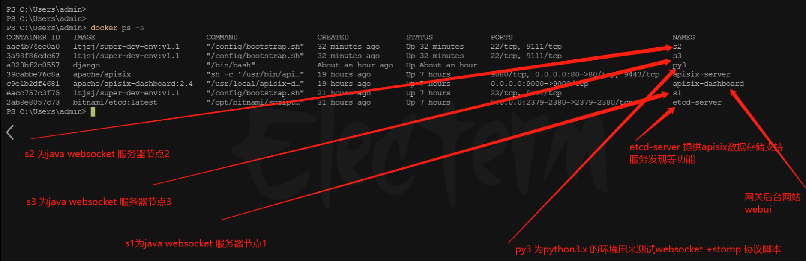
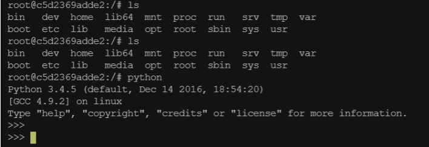
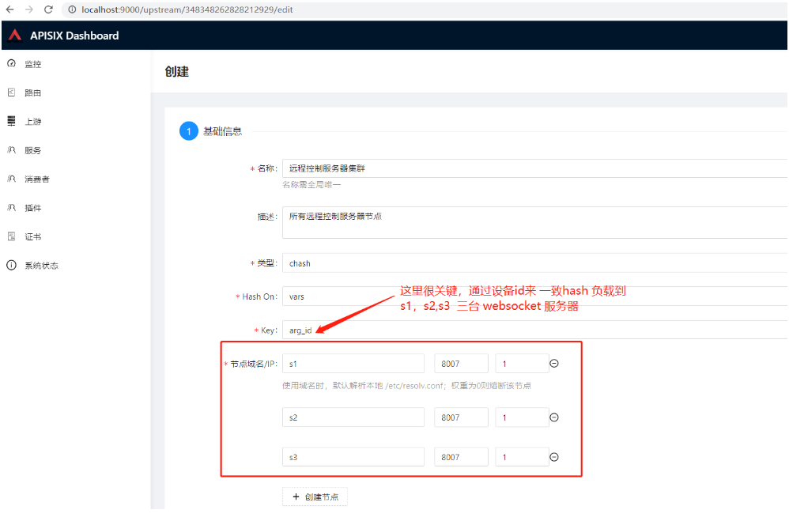
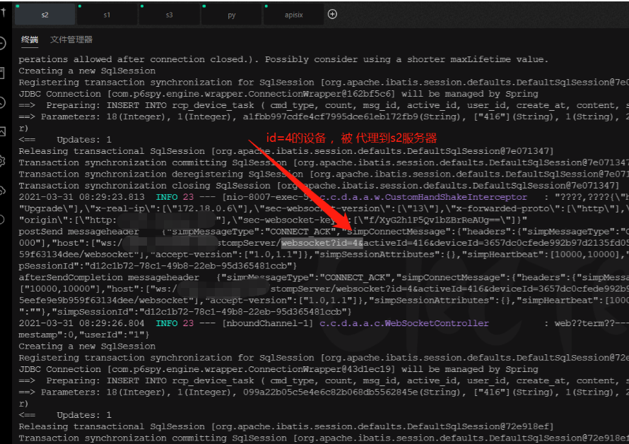

Reverse Proxy to Websocket Service Set Based on Apisix2
基于apisix2.4网关反向代理到websocket服务集节点⌗
问题背景，主要是解决远程控制通信服务端单点问题，借助openresty强劲的性能，可定制化的负载均衡设计特点
apisix就是基于openresty开发分布式网关集群平台，优势现阶段轻量，易维护等
本为搭建环境，模拟集群环境，在我windows 电脑 采用docker 模拟
整体的环境说明：如下图

-
搭建环境
docker pull django -
运行python 容器
docker run -itd --name py3 -v /i:/i -v /d:/d django /bin/bash -
进入容器，检查容器环境是否正常
docker exec -it c5d2369adde2 /bin/bash docker exec -it 58e1c95fea73 /bin/sh
-
安装websocket
pip install websocket pip install stomp.py -
启动后端 java websocket 环境
进入java 容器，设置同一个网络环境，同一个网段
docker run --name s1 --network app-tier -d -v /i:/i -v /d:/d -p 8081:8080 ltjsj/super-dev-env:v1.1
docker exec -it s1 /bin/bash
java -jar /i/path/to/websocket.jar
docker inspect s1 | findstr IPAddress # 查看容器ip， 准备填入apisix 节点
-
配置apisix
路由代理，配置上游

-
编写python 脚本测试代码
#!/usr/bin/env python # -*- coding: utf-8 -*- # @Time : 2021/03/31 下午03:21 # @Author : ltan.me from stomp_ws import Stomp import time def do_thing_a(msg): print("MESSAGE: " + msg) if __name__ == "__main__": for i in range(0,10): #为了模拟设备id,激活id,采用id为作为通信参数，生成10个id分别请求websocket服务器域名 url = "test.xxxx.com/stompServer/websocket?id=%s&activeId=416&deviceId=3657dc0cfede992b97d2135fd0514c6c&userId=1&&connectType=0&token=9d3b7282d295eefe9e9b959f63134dee" % str(i) print(url) stomp = Stomp(url, sockjs=True, wss=False) stomp.connect() stomp.subscribe("/user/1_416/command", do_thing_a) time.sleep(2) stomp.send("/web2client_term", '{"userId":1,"activeId":416,"cmdType":18,"content":"python-hahah"}') -
最终运行效果

